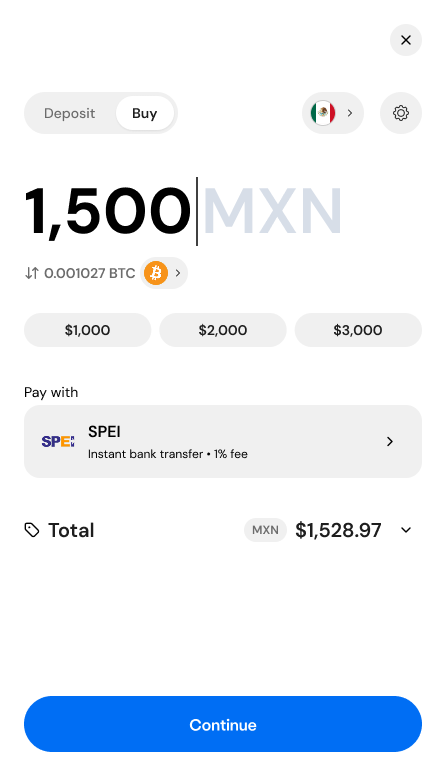
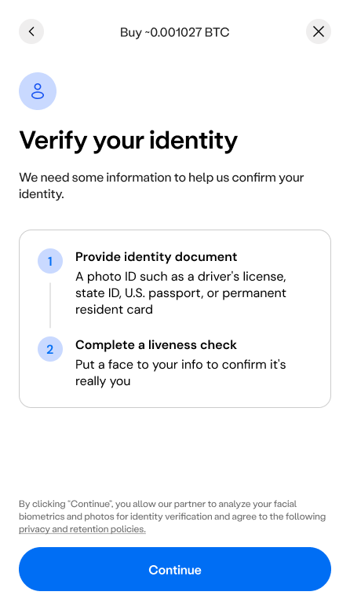
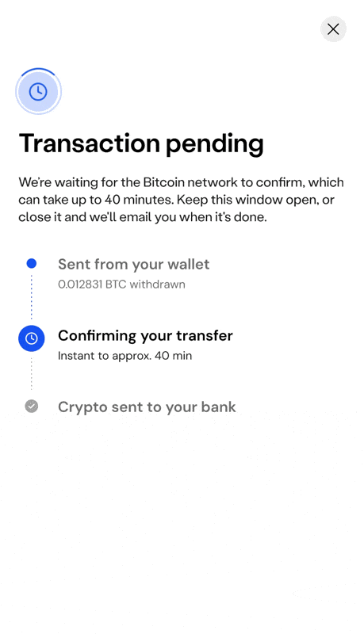
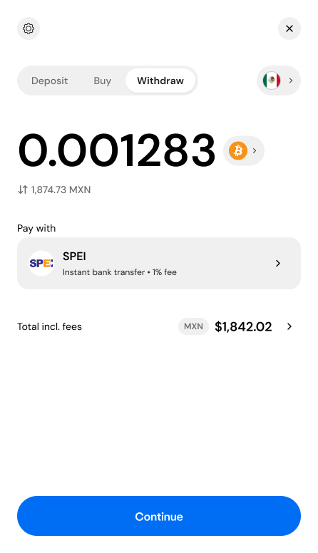
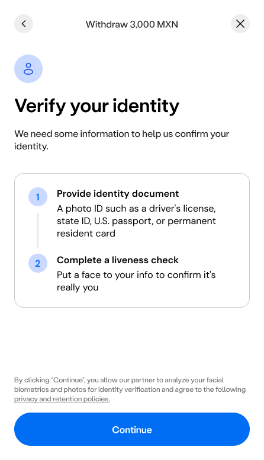
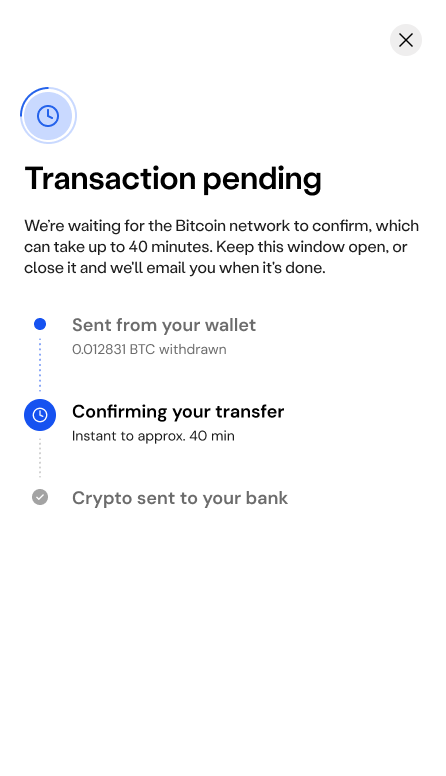
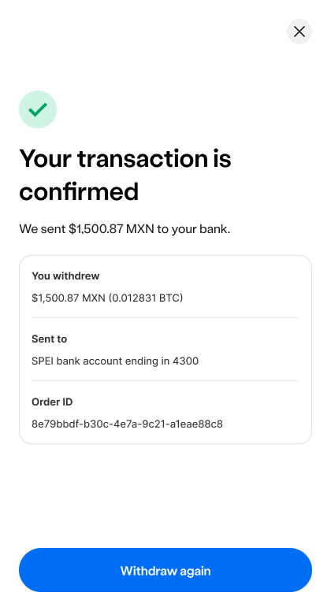

may - aug 2026
jul 2026
fiat onramp
Onboarding flow for first-time users buying crypto.



Stepped mobile flow covering KYC verification, bank transfer instructions, and a transfer pending state.
jul 2026
fiat offramp
Extending the buy framework for withdrawing crypto to cash.




Stepped mobile flow covering KYC verification, bank transfer instructions, and a transfer pending state.